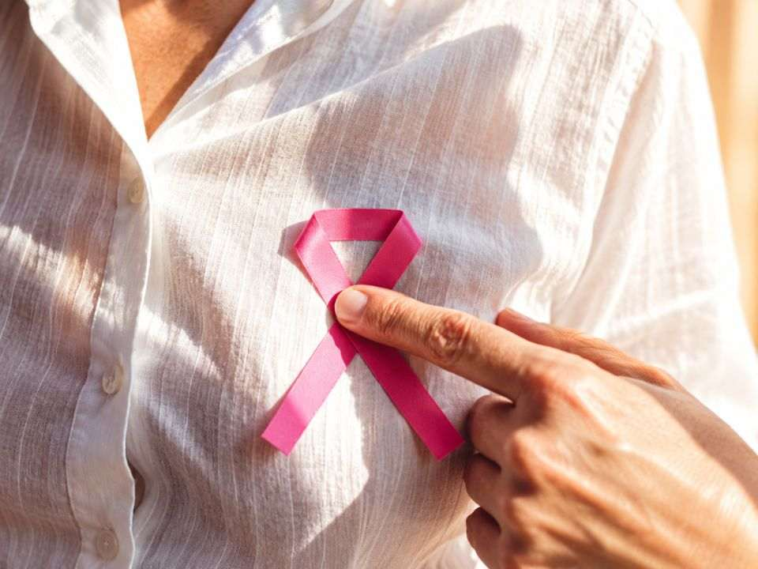

Sobre o câncer de mama

O que é?
O câncer de mama é uma doença causada pela multiplicação desordenada e rápida de células anormais no tecido mamário (como nos ductos ou lóbulos), formando um tumor maligno que pode invadir tecidos vizinhos ou se espalhar para outros órgãos (metástase). O câncer de mama tem cura. Quanto mais cedo o diagnóstico, mais leve e eficaz é o tratamento. Apoie quem está nessa jornada e incentive quem você ama a se cuidar!
Fatores de risco
- Idade avançada
- Histórico familiar
- Fatores hormonais
- Estilo de vida e Hábitos